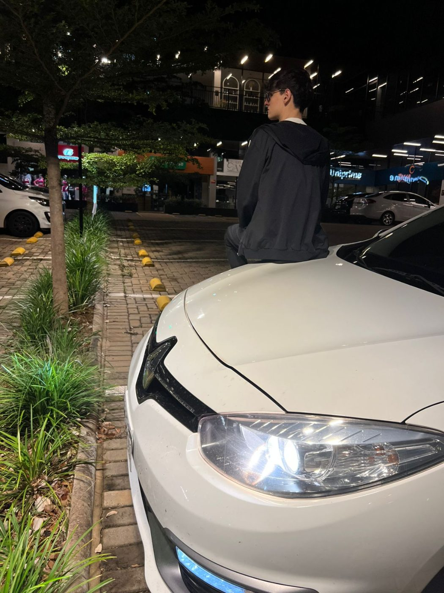

O câmbio do seu Fluence está esquentando? Agora você vê.
O CVT Monitor mostra no celular a temperatura do óleo do câmbio CVT, ao vivo, e avisa por voz antes de virar problema. Basta um scanner OBD2 Bluetooth plugado embaixo do volante.
- Pagamento único
- Licença vitalícia
- Funciona sem internet
- Teste grátis
Calor é o maior inimigo do câmbio CVT.
Trânsito parado, subida de serra, dia de 35 °C, carro carregado. É nessas horas que o óleo do câmbio esquenta, e o painel do Fluence não mostra nada sobre isso.
Você tem o ponteiro do motor, mas o óleo do CVT fica no escuro. Não dá para saber se está tudo bem ou se é hora de aliviar o pé.
Acima de 90 °C o fluido começa a perder as propriedades mais depressa. Óleo gasto é o caminho para trancos, patinação e conserto caro.
Com a temperatura na tela e um alerta de voz, você muda o jeito de dirigir no momento certo e sabe quando trocar o fluido.
Plugou, conectou, pode rodar.
Leva menos de um minuto na primeira vez. Depois o app conecta sozinho toda vez que você liga o carro.
Ela fica embaixo do volante, perto dos pedais. Serve qualquer scanner ELM327 v1.5 Bluetooth, aquele pequeno e barato.
Ligue a ignição, abra o CVT Monitor e escolha o scanner. O app encontra o câmbio e o motor e começa a ler os dados.
Se o óleo passar de 90 °C ou de 110 °C, o app avisa por voz e por notificação, mesmo com a tela apagada ou com outro app aberto.
Mexe aí: é o app de verdade.
Toque nas abas para trocar de tela e use o simulador para ver o que acontece quando o câmbio esquenta. Os números são simulados, como no modo demonstração do app.
O câmbio está trabalhando na faixa certa. Pode dirigir normalmente.
Faixas amarela e vermelha marcam 90°C e 110°C. A linha tracejada é a velocidade, para relacionar o aquecimento com o jeito de dirigir.
O contador só sobe quando o óleo passa de 90°C. A troca é recomendada acima de 210.000 pontos, mas óleo escuro ou com cheiro de queimado também pede troca.
Instale, teste no seu carro e só depois decida.
O app é o mesmo para todo mundo. Sem a chave, ele já funciona em modo de teste. Com a chave, libera tudo para sempre.
O download abre aqui no dia do lançamento.
- Modo demonstração completoTodas as telas, com dados simulados, sem precisar de scanner.
- 5 minutos por dia com o carro realPara conferir se o seu scanner conecta e ver os seus dados de verdade.
- Com a chave: sem limite de tempoMonitoramento o tempo todo, em todas as viagens, para sempre.
O que você precisa.
Feito primeiro para o Fluence, porque é o carro do canal e onde cada leitura foi conferida. Outros carros com o mesmo tipo de câmbio entram depois.
Câmbio X-Tronic (Jatco JF011E), de todos os anos. Versões Dynamique, Privilège e GT Line.
- Celular Android 8 ou mais novo
- Scanner OBD2 ELM327 v1.5 Bluetooth
- Internet só para ativar a chave, uma vez
Nissan Sentra, Kicks e Versa são os próximos da fila. Depois, outras marcas com câmbio CVT.
Paga uma vez, usa para sempre.
Sem mensalidade e sem anúncio. Custa menos que um tanque de combustível e menos que uma única troca de fluido do câmbio.
Depois passa para R$ 49,90.
- Licença vitalícia, com todas as atualizações
- Use em até 2 celulares ao mesmo tempo
- Trocou de celular? Transfere pelo próprio app
- Funciona sem internet depois de ativar
- Suporte direto comigo pelo Instagram
Depois do pagamento você recebe a chave de ativação e o link para baixar o app.
Não gostou ou não funcionou no seu carro? Peça o dinheiro de volta em até 7 dias.
O modo de teste mostra se o seu scanner conecta no seu carro antes de você pagar qualquer coisa.

Luiz · @whitelinefluence“Fiz o app que eu queria ter no meu Fluence. Cada leitura foi conferida no meu carro antes de chegar no seu.”
Sou o Luiz, do canal Whiteline Fluence. Ando de Fluence GT Line todo dia e a pergunta que mais recebo é sobre o câmbio CVT. O CVT Monitor é a resposta prática: em vez de adivinhar, você vê.
Perguntas frequentes.
Ficou alguma? Me chama no direct do Instagram.
Qual scanner eu preciso comprar?
Um scanner OBD2 ELM327 versão 1.5 com Bluetooth. É aquele pequeno, vendido em qualquer loja de autopeças ou marketplace. Prefira o Bluetooth, não o Wi-Fi.
O app tem três jeitos diferentes de conectar justamente para aceitar os modelos genéricos mais comuns. Na dúvida, use os 5 minutos grátis por dia para confirmar antes de comprar a licença.
Funciona no iPhone?
Não. Por enquanto o CVT Monitor é só para Android 8 ou mais novo.
O app mexe em alguma coisa no carro?
Não. Ele só lê os dados que o módulo do câmbio e o do motor já informam. Comandos que poderiam alterar alguma configuração ficam bloqueados dentro do app.
Precisa de internet?
Só uma vez, para ativar a chave. Depois disso o app funciona totalmente offline, inclusive na estrada sem sinal.
Posso usar em mais de um celular?
Sim, em até 2 celulares ao mesmo tempo. Se trocar de aparelho, você mesmo libera o antigo pelo app e ativa no novo.
Como instalo? Por que não está na Play Store?
O app é instalado pelo arquivo (APK) baixado aqui no site, e o passo a passo aparece junto com o download. Vender direto, sem a loja no meio, é o que permite o pagamento único com licença vitalícia.
E se não funcionar no meu carro?
Primeiro, teste de graça: o modo de teste mostra se o scanner conecta e se os dados chegam. Se mesmo assim você comprar e não der certo, você tem 7 dias para pedir o dinheiro de volta.
O app substitui a revisão do câmbio?
Não. Ele ajuda a acompanhar a temperatura e o desgaste do fluido para você dirigir e planejar a manutenção melhor, mas não é diagnóstico. Barulho, tranco ou patinação são caso para um especialista em câmbio CVT.
Quando lança?
Em breve. Os últimos testes estão sendo feitos no Fluence do canal, com scanner de verdade, para calibrar a leitura do câmbio. Toque em “Me avise” que eu te chamo no dia, e acompanhe os bastidores no TikTok.